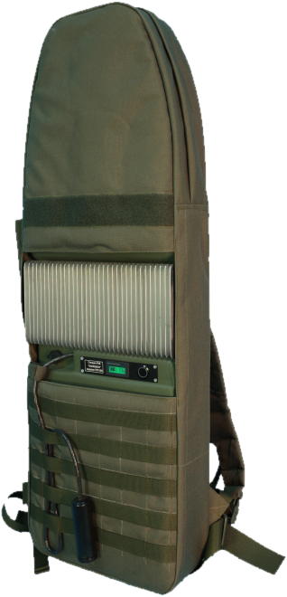

5 семейств · одна линейка
Карта линейки
От купола на транспорт до стационарного комплекса и питания.
Пять семейств, из которых собирается контур под задачу.

Купольные
купол на транспорт

Рюкзаки
на спину, автономно

Стационарные
на объект и периметр

Обнаружение
находит и включает

Питание и аксессуары
чтобы работало автономно
К-8М · К-12М · К-15М · ФПВ-8М · ФПВ-12 · ФПВ-7 мото
8 или 12 каналов · 50–200 м · 12/24 В
К-15М — старшая купольная модель линейки
ТП 4-28 · ТП 4-50 · ТП 7-100 · ТП 8-100
3,2–10,6 кг · 50–100 м
АКБ 28–100 А·ч
«Штора» К-12/700 · «Ребус-4» · «Поле-31»
до 1000 м · 360°
«Поле-31» — навигация, не менее 2 км
«Сигнал-М2»
300–10 000 МГц
обнаружение 1000–5000 м, автозапуск подавления
ИП-24/100 · Т-9 · СЩ 220/24 · кронштейны и треноги
24 В · 105 А·ч
Т-9: 9 частот контроля · доп. модули 140–400 и 2100–2800 МГц
Реальные фото линейки — купольные станции, рюкзак, стационар, обнаружитель и питание. Паспортные ТТХ. Наличие и срок — по запросу.
Как собирается контур
Первым работает обнаружение, за ним подавление. Ступени добавляются под задачу объекта.